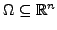
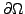
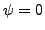

The nonlinear Schrödinger equation is used in many areas of science and technology and describes, for example, the propagation of solutions in fiber optics or Bose-Einstein condensates in ultra cold traps. The Ginzburg-Landau equations is a prototype of such an equation that is used to model the state and the magnetic field inside superconducting nanodevices. To understand the dynamics of these systems, it is critical to have an efficient solver such that the solution space of can be efficiently explored by, for example, numerical continuation.
For an open, bounded domain  with a piecewise smooth boundary , the Ginzburg-Landau equations for extreme type-II superconductors read
Extreme type-II superconductors are common in the domain of high-temperature superconductors, for example.
The trivial solution, , is the normal non-superconducting state which is the lowest energy state for fields above the critical magnetic field strength. For weak magnetic fields, however, there are non-zero solutions that have a lower energy. These are the famous vortex solutions where the magnetic fields penetrate the sample.
This talk will be concerned with the numerical solution of ( ). Applying
Newton's method, the focus will be on to solve linear equation systems with the
Jacobian operator of (
). Applying
Newton's method, the focus will be on to solve linear equation systems with the
Jacobian operator of ( ),
),
Eventually, a solver for will be constructed which allows for a constant number of linear solver iterations independent of the problem size. Numerical evidence will be presented along with scalability studies to provide insight on the performance of the solver in high-performance computing environments.